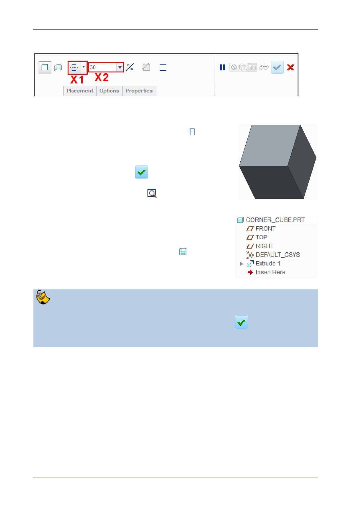

PTC Academic Program
2. Making changes to the extrude using the dashboard:
In the extrude dashboard, click on the small
triangle next to the depth option X1 to open
the drop-down menu. Select Symmetric
from the list.
Click in the depth field X2 , type 30 and press
ENTER .
Click Complete Feature
from the
dashboard.
In the Graphics toolbar, click
to refit the
model in the graphics screen.
The new extrude feature is added to the Model Tree
on the left of the screen.
3. Saving your work
In the Quick Access toolbar, click Save .
In the Save Object dialog, click OK to specify
that the model will be saved to your working
directory.
If the extrude dashboard mysteriously closes before intended, you probably
middle mouse clicked. Engineers use many shortcuts to speed up their work and
middle click is the shortcut to select Complete Feature
and close the
dashboard!
If you need to re-open the dashboard, right-click on Extrude 1 in the model tree
and select Edit Definition from the pop-up menu.
© 2012 PTC
Creo Parametric 2.0 Primer
Page 21